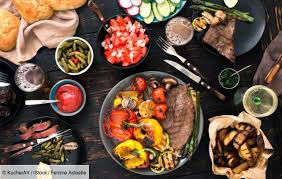

Commencez votre journée du bon pied avec nos délicieux petits déjeuners ! Entre classiques
indémodables
et créations gourmandes, nos options fraîches et savoureuses sont pensées pour ravir toutes les
papilles. Que vous soyez adepte d'un café rapide ou d'un repas complet pour bien
démarrer, nous avons ce qu'il vous faut.
Option
Plat
Prix
Description
Vegetarien
Soupe aux champignons
11
Crémeuse et parfumée
Légumes grillés
12
Mélange de légumes frais de saison
Salade César
14
Salade fraîche avec croutons et fromage
Viande
Omelette au jambon
14
Omelette moelleuse avec jambon fumé
Pain perdu
10
Recette maison avec sirop d'érable
Poulet et purée
25
Poulet tendre avec purée et sauce tomate
Escalope et frites
24
Escalope panée servie avec frites maison
Steak grillé
30
Servi avec légumes et sauce au poivre
Menu soir :

Figure 2: Nos spécialités du soir
Pour une soirée mémorable, découvrez notre menu du soir, où saveurs raffinées et produits de saison
se
rencontrent.
Option
Plat
Prix (€)
Description
Viande
Entrecôte
25
Servie avec frites et salade
Végétarien
Risotto aux champignons
18
Crémeux et parfumé
Tout
Bourak
2 / pièce
Petite Bourak farcie à la viande hachée
Poisson
Saumon grillé
22
Servi avec sauce citron et légumes
Boissons :
Découvrez notre carte des boissons soigneusement élaborée pour accompagner vos repas et satisfaire
toutes vos envies. Que vous soyez amateur de boissons chaudes, friand de cocktails créatifs ou
adepte de jus frais, nous avons quelque chose pour vous.